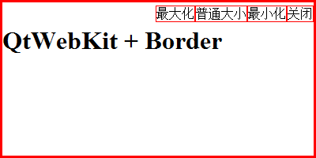

无边框界面需要解决的问题
之前我们其实已经实现界面了，可以在界面上用HTML+CSS实现一切我们想要的，但是为了让程序更加个性化，我们需要自己定义程序的边框（支持拖动、改变大小、最大化、最小化、关闭）
无边框界面：最大化、最小化、关闭
最大化、最小化是类QtWebKit.QWebView中内置的方法
关闭程序是类QtGui.QApplication中内置的方法
- 最大化：showMaximized()
- 最小化：showMinimized()
- 普通大小：showNormal()
- 关闭：quit()
无边框界面：示例程序1 （实现最大化、最小化、关闭）
python：
1 |
|
HTML：
1 | <script type="ext/javascript" src="jquery-1.11.2.js" script type="text/javascript"> |
1 | script |
自定义界面的最终实现
解决了基本功能，下面来实现拖动和改变大小
拖动很好实现，缩放比较复杂，这里先说一下缩放
缩放的实现方式就是将程序化为九宫格，分为：中、左、右、上、下、左上、右上、左下、右下
然后为设置鼠标移动到不同区域的鼠标图标和改变大小的方式，其实拖动和缩放可以集成在相同的文件中，下面直接给出插件
实现原理：用到了qt的事件模型的一个强大的功能，就是一个QObject对象能够监视发送其他QObject对象的事件，在事件到达之前对其进行处理，相当于“代理”
这里还需要用CSS和javascript进行修正。原因是这样的，因为我们采用了qtwebkit，而网页都有自己的鼠标指针，这会覆盖掉我们在pyqt中实现的改变鼠标样式的功能，所以需要用javascript进行修正。
Demo下载：ex_noborder
效果：（支持拖动、改变大小、最大化、普通大小、最小化、关闭）
